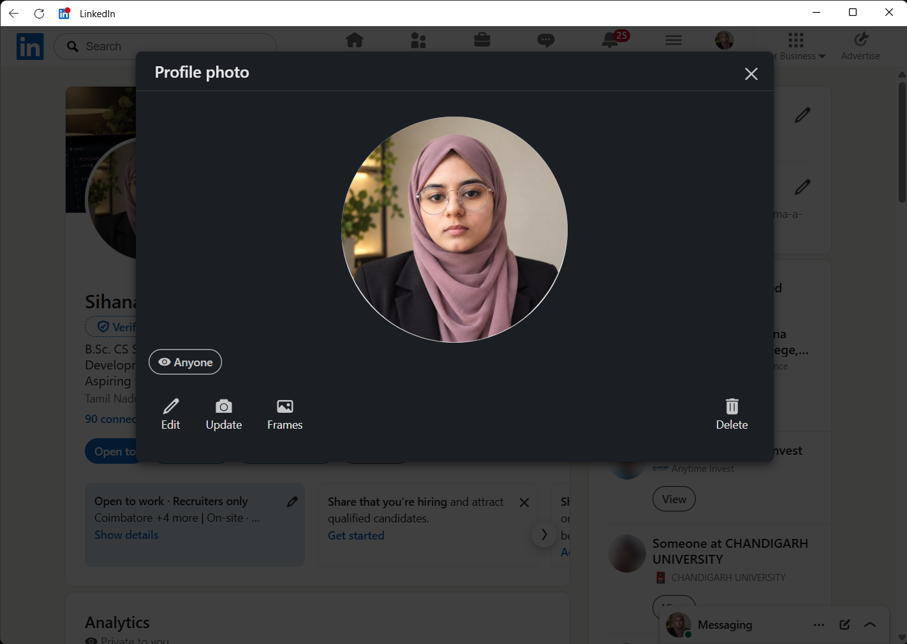

CURRENTLY STUDYING · FIRST YEAR
B.Sc. Computer Science
Sri Krishna College of Arts and Science
Coimbatore, Tamil NaduEvery expert was once a beginner. I'm enjoying the process of figuring things out, one project and one new idea at a time.

I'm a first-year Computer Science student at Sri Krishna College of Arts and Science in Coimbatore. I got into programming because I wanted to understand how the things we use every day actually work.
Now, I'm learning the foundations, making small things that solve real problems, and following my curiosity wherever it leads. I'm especially excited about the possibilities at the intersection of AI and software development.
I'm early in my journey, and that's the fun part: there's always something new to discover and another idea to try.
I'd love to connectSri Krishna College of Arts and Science
Coimbatore, Tamil NaduExploring how intelligent systems can help people solve everyday challenges.
Learning to turn an idea into reliable, useful software—one step at a time.
Breaking down tricky problems, finding patterns, and working towards a clean solution.
Making the technical feel a little more expressive, playful, and human.
Take a look at what I've been learning or get in touch.
Explore my skills